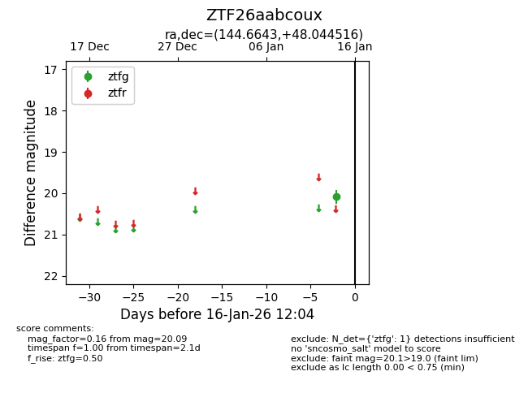
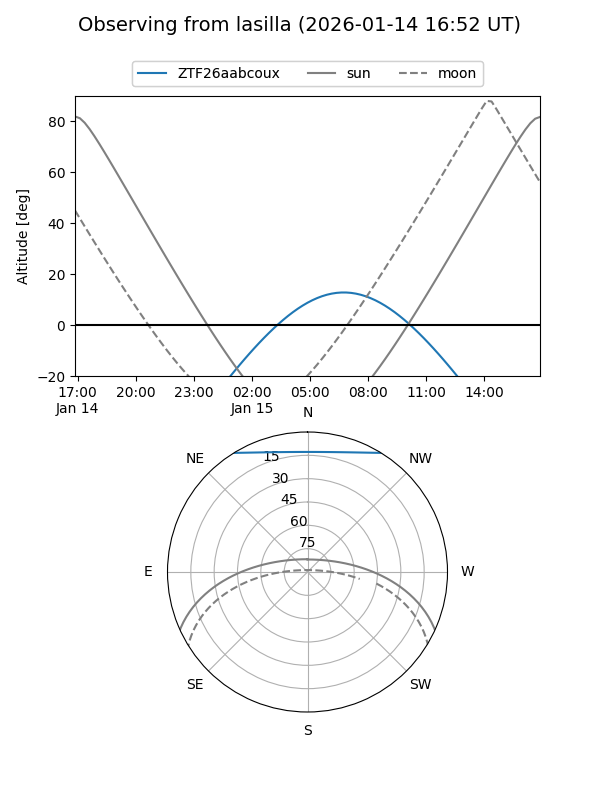
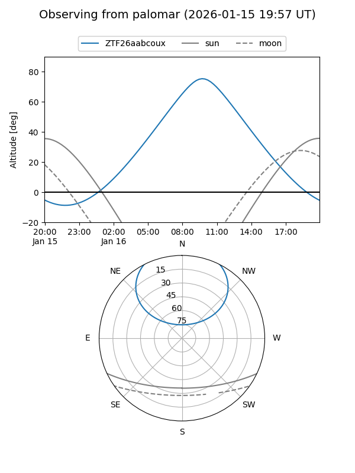

ZTF26aabcoux
Target ZTF26aabcoux at 2026-01-16 12:05
Aliases and brokers:
FINK: link
Lasair: link
ALeRCE: link
alt names
ZTF26aabcoux (ztf,fink_ztf)
Coordinates:
equatorial (ra, dec) = 144.6643,+48.04452
equatorial (HMS+DMS) = 09:38:39.43,+48:02:40.26
galactic (l, b) = (170.3081,+47.36857)
Flags:
Photometry:
last ztfg=20.09
1 ztfg detections
Lightcurve

Visibility


Additional plots